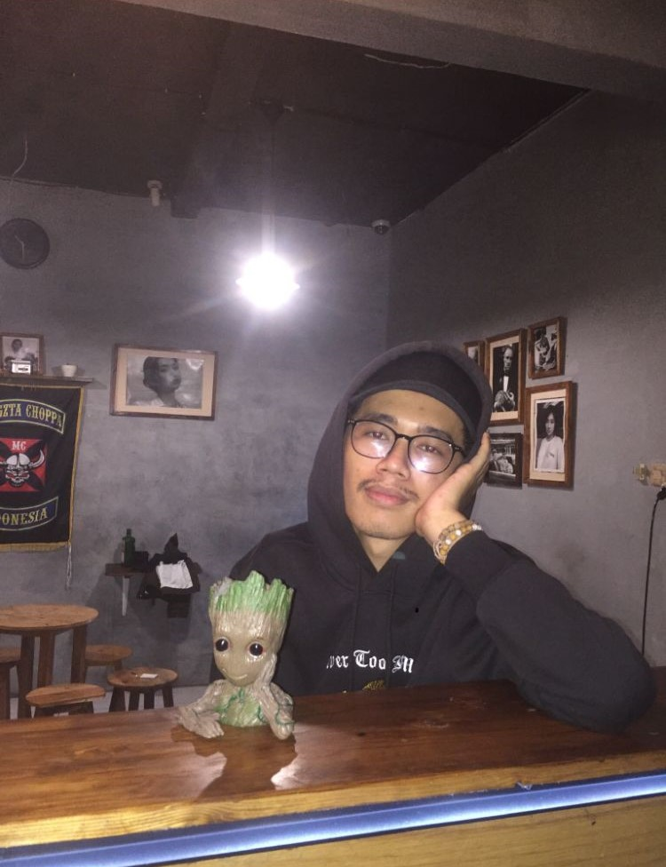

Nama saya Bagus Aji Hapsoro dengan prodi Teknik Informatika Universitas Budi Luhur,
saya mengambil peminatan Programming Expert dan saya sekarang menjalani semester 6 MSIB di NF Computer.
Semoga saat tugas akhir teman - teman bisa bekerja sama dengan saya sampai selesai! Hobi saya adalah
menonton pertandingan MMA dan fighter yang saya suka adalah Conor MCgregor atau disebut The Notorius!